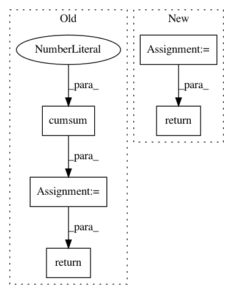

c899e6e816306956208664dcabd11e5e84e4bcb7,factor_analyzer/factor_analyzer.py,FactorAnalyzer,get_factor_variance,#FactorAnalyzer#,897
Before Change
proportional_variance = variance / n_rows
// calculate cumulative variance
cumulative_variance = proportional_variance.cumsum(axis=0)
// package variance info
variance_info = pd.DataFrame([variance,
proportional_variance,
cumulative_variance],
index=["SS Loadings",
"Proportion Var",
"Cumulative Var"])
return variance_info
def get_scores(self,
data,
scale_mean=None,
After Change
// meets all of our expected criteria
check_is_fitted(self, "loadings_")
loadings = self.loadings_.copy()
return self._get_factor_variance(loadings)
In pattern: SUPERPATTERN
Frequency: 3
Non-data size: 5
Instances
Project Name: EducationalTestingService/factor_analyzer
Commit Name: c899e6e816306956208664dcabd11e5e84e4bcb7
Time: 2019-04-02
Author: jbiggs@ets.org
File Name: factor_analyzer/factor_analyzer.py
Class Name: FactorAnalyzer
Method Name: get_factor_variance
Project Name: soft-matter/trackpy
Commit Name: dbeab7509cfec1314b6529d57fbd090ce744695c
Time: 2017-07-27
Author: caspervdw@gmail.com
File Name: trackpy/motion.py
Class Name:
Method Name: compute_drift
Project Name: havakv/pycox
Commit Name: 190d9b204a1a4798f0723c8d8d37ac5ac950909e
Time: 2019-05-08
Author: haavard.kvamme@gmail..com
File Name: pycox/models/deephit.py
Class Name: DeepHitSingle
Method Name: predict_survival_function